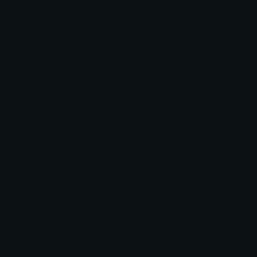

useful resources
a
矮
- 他太矮了，看不到围墙外面
- 矮人们是伟大的铁匠
安静

- 保持安静
- 这餐厅很安静让我安静地工作
- 我只想一个人安安静静地生活
- 这儿有没有比较安静的地方我可以学习的？
安慰- comfort
- 他想安慰她,却没想到反而使他更伤心
- 却 - but; yet
- 没想到 - didn't expect
- 反而 - instead contrary
- 使 - to make to cause
- 更 - more even more
- 这几天她心情不好，你要好好安慰她一下
- 我妈妈很快就安慰了我
安装 - install; mount
- 请按装linux
- 他们在办公室安装了一台自动贩卖机
- 自动 - automatic
- 贩卖机 - vending machine
b
班 - team, class, squad, work shift, ranking
- 今晚谁上班
- 你上班迟到了
- 你几时下班?
搬 - move, relocate, move (sth heavy/bulky) shift
- 他搬了家
- 我是昨天搬来的
- 我下个月要搬家了
- 他搬到了我家附近
帮忙
- 明天如果你有空的话可以过来帮忙
包包
- 那个包包看起来好贵
饱 - full
- 我已经吃饱了，谢谢
保守 - conservative
- 在那比较保守的时代,即使是青年,也多是循规蹈矩的
- 你总认为我思想保守,其实你不了解我,我不是顽固不化的人
本义
- 这个词不能按本义去理解
避免
- 我们应该尽量避免浪费食物
- 我们必须避免犯同样的错误
- 我们应该学会避免冲动行为
- 冲动- impulsive
- 行为- impulsive
比较
- 这个问题比较简单
- 我觉得这个价格比较贵
- 我比较讨厌男人说脏话
- 你比较喜欢用Gmail还是Hotmail
毕竟
- 毕竟，我应认真相信些什么？
- 为什么要准时抵达，毕竟大家都迟到。
- 采用重罚虽然可以立竿见影，但毕竟只是治标的办法
- 采用 - to adopt; to employ; to use
- 重罚 - to punish severely
比赛 - match
- 你赢了比赛了吗？
必须 - must; have to
- 你必须吃药
鼻子 - nose
- 大象有长鼻子
表达 - express
- 语言表达思想
- 把你的想法表达清楚
- 你能用英语表达自己吗
- 她用图来表达他的想法
表示 - express; show; indicate
- 感谢您的支持，我要表示诚挚的感谢
变化 - change (intransitive verb, noun changes)
- 价格根据需求变化
- 根据 - according to; based on; basis; foundation
- 需求 - demand (economics)
- 十年没见他，他的变化很大
- 最近的天气没有变化，还是很冷。
- 和十年前比，人们的观念变化很大。
- 现在的政策不确定，每天都有新变化。
并非 - really isn't
- 这并非是我的想要的
- 我希望事情并非如此
- 你的状况并非毫无希望
- 状况 - situation; state; condition
- 毫无 - not in the least; to completely lack
- 只可惜那些美妙的词语并非出于我手
- 我一见到你就低下头不说话，并非我讨厌你，而是因为我在心里偷偷喜欢着你
- 低下 - lower one's head
- 偷偷 - stealthily
不断- unceasing
- 学习外语需要不断提高
- 他的投资收益不断增长
- 消费者的需求不断增加
- 学习能让我们不断进步
- 这个公司在不断地壮大
不可避免 - unavoidably
- 战争并非不可避免
c
差 - poor; bad; lacking
- 我的中文听力很差
充满 - full of
- 生活每天都充满希望
除了 - besides; apart from; in addition to; except (for)
- 除了英语，我也会说汉语和孟加拉语
- 除了运动以外， 你还有什么爱好？
- 以外 - apart from; other than; except for
d
e
f
g
h
i
j
交给
接下来
- 你接下来做了什么
- 接下来你们想去哪里
- 接下来做什么是我们的问题
- 我不知道接下来我要做什么
- 没有人知道他接下来会干什么
- 接下来会发生什么没有人知道
- 我需要你指导我接下来该做什么
k
肯 - consent

- 每个男人都想要强壮
l
m
n
o
p
q
强壮 - strong
- 每个男人都想要强壮
歧视 - discrimination
- 他反对种族歧视
- 反对 - to fight against; to oppose
- 种族 - race; ethnicity
清醒 - awake; clear-headed; sober
- 我喝了杯咖啡来保持清醒
- 我们很清醒
r
s
t
突发奇想 - have a sudden idea
- 有天我突发奇想
x
闲聊 - chat; casual conversation
- 有时我们在一起闲聊
- 有时我们在一起闲聊过
y
一望无际
- 草原向四周伸展，一望无际
z
宅女/男- otaku
找到 - find
- 我找到我的生活了
- 现在的大学生很难找到工作
长大
- 他在澳大利亚长大
- 他的孩子们长大了
只 - only
- 我只买了一件衣服
准备好了 - to be ready
- 准备好了
自信 - confidence
- 我喜欢你的自信


 /
/